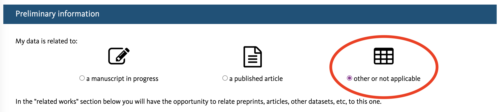

Archiving and preserving your data
As you finalize your project, an important task is to archive your data in a publicly available repository (pending sensitivity and by non-disclosure agreement exceptions). There are a few important steps to ensure that your data can be reused by others and thus make your work more reproducible.
What scientific products to preserve?
Often the first question that comes to mind when starting to preserve your work is: What should I include in my data archive? Generally speaking, you want to preserve your work. This means capturing the methodology you used, the raw data you collected, any data cleaning you did, and any data and output (figure, report, etc.) you generated. Okay… so you mean everything!? Well, yes and no. Everything that was relevant to help you to come to the findings and conclusions discussed in your project report or any other publications and deliverables. Let’s break this down!
Raw data
Here are a few questions to ask yourself to determine if you should refer in your documentation to the raw data you used or also include them in your data archive.
- The raw data is already publicly accessible, and the hosting solution (website, FTP server, etc.) seems well maintained (ideally providing a recommended citation)
=> Document the website or process you used to collect the data and when you accessed/downloaded the data you used. Try also to determine if a pecific version number is associated with the data you used.*
- The raw data is not publicly accessible
Note that we are not talking about data under a non-disclosure agreement (NDA) here but more about data with an unclear reuse status or obtained by interactions with a person or an institution. For example, if the data you used were sent to you privately, then we recommend that you:
- inquire with your person of contact about the status of licensing and if they would be willing to let you share those data publicly. You might face resistance at first, so take the time to explain why you think it is valuable to your work to also share those data sets.
- if, in the end, it is not possible to share the data, please still describe the data in your documentation and list the contact information (person or institution) to inquire about this data set.
Intermediate data
This is data you generated either while cleaning or analyzing the raw data. You should preserve it if:
- it was not directly generated by a script (otherwise, preserve the code instead)
- it has reusable value. For example, cleaned-up versions of raw data can be very valuable for others to reuse!
Code
Scripting your analytical workflow from the raw data to the end products is a great way to make your work more reproducible and more reusable by others. We thus strongly encourage your team to develop code to process and analyze data. Cloud-based code repository services, such as GitHub, GitLab, BitBucket, and more, are a great way to both manage and preserve your code.
Those services are often well-integrated with data repositories that link your code repository with your data archive. They also offer a way to tag a specific version of your code to ensure it is the exact code you used for a specific analysis.
Final products
We recommend including any data set used to produce statistics, figures maps, and other visualizations that were used in your work, in this case, even if generated by scripts.
Choosing a data repository
OK, we know what we want to archive. Now let’s decide where we want to preserve things!
UCSB’s institutional data repository Dryad will be your default data repository. However, we encourage you to discuss with your Faculty Advisor to determine if other data repositories might suit your targeted audience/community better. If you would like to research on your own which data repository could be best for your project, the Registry of Research Data Repositories is a great resource to do so.
Dryad
Dryad is free of use for any affiliated researcher. Here is an overview of the process of submitting data to DRYAD:

Before you can start this submission process, we will describe the information you need to prepare for your data archive submission.
Sharing your work
Use open file formats
We recommend using open and text-based file formats as much as possible to make your data more accessible. It removes the need to buy specific software to open your data and ensures that this format will remain readable in the longer term.
Choosing a license
This can quickly become an overwhelming subject. In a nutshell, Creative Commons licenses are the ones that are favored to license data.

Note that data repositories often support a certain number of licenses, so this can be a parameter to help you choose which data repository you want to use. For example, DRAYD is licensing all its content under CC0, an equivalent to saying its content is in the public domain.
If you want to know more on how to best license your data, click here
Documenting your work
To make your archiving process the most efficient, it is key to document your work as you progress throughout your project. If you do so, archiving your data will consist of collecting existing information about the various parts of your project rather than developing it from scratch a few months after you have generated this specific dataset.
Add an image about the power of README
Metadata
Metadata aims at describing your data with enough information that should let you be able to reuse this data even if you know nothing about this specific dataset. It is sometimes defined as data about data. So what should you include? Here are some pointers:
- Describe the contents of data files. If you are using complex jargon or concepts make sure you refer to external vocabulary or clearly define these terms as used in your project
- Keep data entry consistent
- Define the parameters and the units on the parameter
- Explain the formats for date, time, geographic coordinates, and other parameters
- Define any coded values or acronyms used (in the data or headers)
- Describe quality flags or qualifying values
- Define missing values
- Always use an established metadata standard
Note that there are existing metadata standards that can help you to structure your data in a systematic way. Some data repositories offer web forms that let you enter metadata information in a way that is compatible with those standards.
README
README files are not new; they have been around computer-based projects since the early days and have proven to be very valuable in describing content. For your main project README we recommend compiling the following information about your data:
- Data sources: where did you get your raw data from?
- Provenance: what data set you used/combined to generate your new data
- License & permissions: state under which license your data sets are released so others know what they can do with your data
- Methodology: describe the methodology used for your projects
- Data listing: list all your data and their potential relationships
- Metadata: add the metadata you developed earlier for each of your data set
Note that you should not feel limited to one README only. It is a great practice to also have READMEs in any subfolder/section of your project with complex organization and explanations on how to navigate the file structure or in which order files should be combined.
Our team has prepared a README template for your submission to Dryad. Note that some sections might not be relevant to your project, and you should simply delete those as you move through filling out this template.
Submitting to DRYAD
You are now ready to start the submission process!! Here we are going to use DRYAD as an example.
- Before logging into Dryad, you must create a free ORCID. ORCIDs are free, unique identifiers for yourself. Think of it as a Social Security Number for Researchers that, this time, you can share. Create your account here.
- Then you can login and should land on a page as below. Click on the
Start new datasetbutton
- You will now have to fill out the web form to provide project-level information, starting with the Preliminary information section. Select
other or not applicableas your submission is not related to a journal publication.

- Fill the Basic information section
- Title: Note it can be different than your project a describing as much as possible your data archive content
- Authors: enter all your teammates
- Research domain: Choose the more relevant to your project
- Funding: check the
No Funding received boxor enter any external funding you received for this project - Abstract: enter a short description of your work
- Data Description section:
- Keywords: add relevant keywords and please make sure to add the Bren project keyword
BrenMESMProject - Methods: describe the methods you used for your analysis
- Usage notes: you can add any software you used to conduct your project here. please provide the version number along with the software name
- Keywords: add relevant keywords and please make sure to add the Bren project keyword
- Related work section:
- This is where you can link your data repository on GitHub with your data archive. Select
Softwareas Work type and paste the URL to your repository. Do not forget to also provide the necessary information on the README on your code repository. Once your data archive is published on DRYAD, do not forget to add the link to README on GitHub, linking the resources both ways.
- This is where you can link your data repository on GitHub with your data archive. Select
DRYAD full Submission and publication guidelines: https://datadryad.org/stash/submission_process
Data curation process
OK, you have submitted your data and its documentation to the DRYAD (or others) data repository, what is next!? Most of the data repository will have some level of data curation process, mainly a series of checks that will ensure that you provided all the necessary documentation to make your research work understandable to others. Some of those checks might be done automatically (leveraging metadata standards, for example), some others will be done by data curators associated with the data repository. In the coming days of your submission to DRYAD, a curator will reach out to you with a list of items to improve. For example replacing and Excel spreadsheets (proprietary software) with csv files that can be more easily open, especially in several years from now. Adding more information about the raw data you used or clarifying their licensing, provide more details about your methodology. Once this feedback received, you will have to iterate through those recommendations as needed and resubmit your updated documentation and data. You can expect the curation process to take several days to potentially a few weeks. Therefore plan accordingly!!
Publication
Once the curation process is over, your data will be publish and made publicly available. Most of the data repository provide a DOI to reference your data archive. Use this DOI to share and cite your data archive in your project report and publications!!